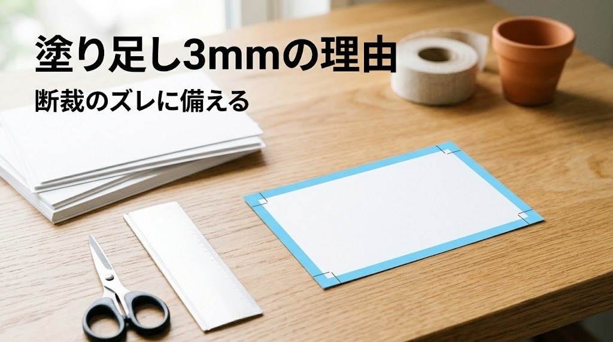

塗り足しとトンボの基本｜なぜ3mm必要なのか、印刷する側から見た「断裁のズレ」の話
※この記事はプロモーション（広告）を含みます

入稿ガイドの「塗り足し3mm」という言葉を見て、「3mmって、どこに何を足せばいいんだろう」と手が止まったことはありませんか？
塗り足しとは、仕上がりの外側に絵柄を3mm延ばしておくことです。3mm必要な理由はひとつ、紙を何百枚も重ねて断裁するとき、刃の位置が0.数mmから1mmほどずれることがあるからです。延ばしておけば、ずれても紙の白い縁が出ません。
トンボは、その断裁と色合わせの位置を印刷会社に伝える目印です。この記事では、塗り足し・仕上がり線・文字の安全領域という3本の線を、印刷する側から見た理由とあわせて紹介します。数字はどれも目安です。最終的には入稿する印刷会社の入稿ガイドに合わせてください。
塗り足しとトンボの基本｜3本の線を先に知る
印刷データには、見えない3本の線があります。この3本の役割が分かると、入稿ガイドの言葉がそのまま読めるようになります。
| 線の名前 | 位置 | 役割 |
|---|---|---|
| 仕上がり線（仕上がりサイズ） | 完成品の端。名刺なら91×55mm | 断裁の目標位置。この線で切り落とす |
| 塗り足し（裁ち落とし） | 仕上がり線の外側3mm | 断裁がずれたときに白い縁が出ないよう、絵柄を延ばしておく範囲 |
| 文字の安全領域 | 仕上がり線の内側3〜5mm | 断裁がずれても切れてほしくない文字・ロゴを置く範囲 |
トンボ（トリムマーク）は、仕上がり線と塗り足しの位置を示す細い線です。四隅に2本ずつある「コーナートンボ」は、内側の線が仕上がり、外側の線が塗り足しの端を示します。上下左右の中央にある「センタートンボ」は、表と裏、4色の版の位置を合わせるために使います。
印刷する側から見ると、トンボは「このデータをどこで切り、どこで色を合わせるか」を伝える唯一の共通言語です。トンボのないデータが届くと、現場では仕上がりサイズをデータの寸法から推測することになり、問い合わせの往復が増えます。印刷全体の流れの中でどの位置にある話かは、デザイナーが知っておきたい印刷の基本の「入稿データの決まり」のところに戻ると見通せます。
なぜ3mm必要なのか｜断裁の現場で起きていること
「0.5mmずれるなら、塗り足しも0.5mmで足りるのでは」と思う人もいるはずです。印刷の現場で何が起きているかを知ると、3mmという数字が納得できます。
商業印刷では、名刺やチラシを1枚ずつ切ることはありません。大きな紙に何面も並べて（面付け）印刷し、数百枚を重ねた束を断裁機の刃で一度に切り落とします。このときにズレが生まれる理由が、いくつも重なっています。
- 刃の押し込みで紙がわずかに動く：刃が紙の束に入るとき、紙は上から押さえられていても、下のほうがほんの少し逃げます。束の上と下で切れる位置が違ってくるのはこのためです
- 紙の伸び縮み：紙は湿度で伸び縮みします。印刷してから断裁するまでの間に、紙全体が0.数mm動くことがあります
- 見当のズレ：印刷の段階で、紙を送るときの位置が1枚ごとにわずかにずれます。断裁は束の中の1枚だけに合わせることはできないので、平均的な位置で切ります
- 面付けの累積：1枚の大きな紙から何面も切り出すので、最初の一刀の位置のズレが、次の一刀にも引き継がれます
これらを合わせると、1mm以内に収めるのが現実的な精度です。塗り足しが3mmあれば、1mmのズレが起きても2mmの余裕が残ります。1mmしか足していないデータは、ズレがそのまま白い縁になって出てきます。
印刷会社で検品をしていると、「端の白い線」は、いちばん多いご相談のひとつでした。データを見ると、絵柄が仕上がり線でぴったり止まっている。これは作った人の技術の問題ではなく、断裁という作業の性質を知らなかっただけです。知ってしまえば、次からは起きません。
トンボの役割｜断裁と色合わせの目印
トンボには、見た目以上に多くの情報が入っています。印刷する側がトンボから読み取っているのは、次の4つです。
- 断裁の位置：コーナートンボの内側の線で切る
- 塗り足しの範囲：コーナートンボの外側の線まで絵柄がある、という合図
- 版の位置合わせ（見当合わせ）：センタートンボと、トンボにある小さな十字で、シアン・マゼンタ・イエロー・ブラックの4つの版が同じ位置に刷れているかを確かめる。4色が0.1mm単位でずれると、文字の縁に別の色がのぞいて見える
- 折りの位置：三つ折りや冊子では、折り線を示す「折りトンボ」を別に置く
トンボの色は「レジストレーション」という、4色すべてが100%の特別な色で作ります。どの版にも同じ位置に出るので、版のズレを目で確かめられるからです。黒（K100）だけでトンボを作ると、ブラックの版にしか出ません。デザインツールでトンボを自動で作る機能を使えば、この色は自動で選ばれます。
印刷通販では、トンボをつけずに「仕上がりサイズ＋塗り足し3mm」の寸法でデータを作る入稿形式も多く見かけます。この場合も、塗り足しの考え方は同じで、印刷会社側が自動でトンボをつけて面付けします。どちらの形式かは、入稿ガイドの「データの作り方」の項目に書いてあるので、作り始める前に一度見ておくと、作り直しが減ります。
文字の安全領域｜内側にも3mmの余裕を
塗り足しは外側の話でした。同じ理由で、内側にも余裕が要ります。断裁が外へずれると白い縁が出ますが、内へずれると、端に置いた文字が切れます。
文字やロゴ、電話番号など「切れてはいけないもの」は、仕上がり線から3〜5mm内側に置きます。名刺のような小さなものでは3mm、チラシやポスターでは5mm以上を目安にすると、余白にもゆとりが出て読みやすくなります。
ここで、はじめて名刺を作る人の声が聞こえてきそうです。「端まで文字を寄せたほうが、かっこよく見える気がして」。気持ちはよく分かります。ただ、印刷する側から見ると、端ぎりぎりの文字は「切れるかもしれない文字」です。安全領域を守ったうえで、背景の色や写真を塗り足しまで延ばせば、端まで絵柄のある、引き締まったデザインは作れます。
| 置くもの | 位置の目安 | 理由 |
|---|---|---|
| 背景の色・写真・帯 | 仕上がり線の外、塗り足し3mmまで延ばす | ずれても白い縁が出ない |
| 文字・ロゴ・QRコード | 仕上がり線の内側3〜5mm | ずれても切れない |
| 細い枠線（仕上がりと平行） | できれば避ける。使うなら内側5mm以上 | 線と紙端の距離がわずかなズレで不ぞろいに見える |
3つめの枠線は、見落としがちな注意点です。紙の端に沿った細い枠は、断裁が0.5mmずれるだけで、左右の余白の差が目で分かります。断裁は「ずれるもの」として、ずれても目立たないデザインにするのが、印刷に強いデザイナーの考え方です。
AI画像・Canvaのデータに塗り足しを足す方法
画像生成AIで作った画像や、Canvaで作ったデザインを印刷に回すとき、塗り足しでつまずく人が多いです。どちらも、最初は「画面で見る」ことを前提にしているからです。進め方を3つに分けます。
| データの種類 | 塗り足しの足し方 | 気をつける点 |
|---|---|---|
| 画像生成AIの画像（背景に使う） | 仕上がりサイズより一回り大きく生成するか、少し拡大して配置し、塗り足しまで延ばす | 拡大しすぎると画質が落ちる。解像度は印刷会社の基準（350dpi前後が目安）に合わせる |
| Canvaなどのデザインツール | 書き出しの設定で「塗り足し（裁ち落とし）」や「トンボ」の項目をオンにしてPDFで書き出す | 執筆時点では、塗り足しつきの書き出しに対応するプランや形式がツールによって異なります。公式ヘルプで確認してください |
| Illustratorなど印刷向けツール | 新規ドキュメントの「裁ち落とし」を3mmに設定し、トンボをつけて書き出す | 仕上がりサイズでアートボードを作り、塗り足しは裁ち落とし設定で持つ |
AI画像は、「仕上がりサイズぴったり」で生成すると、塗り足しの分がありません。名刺なら91×55mmの仕上がりに対して、97×61mm（上下左右3mmずつ足した寸法）の範囲まで絵柄がある状態を目指します。生成の段階から、周囲に少し余白のある構図で作っておくと、あとで延ばしやすくなります。入稿までの全体の流れはAIで作ったチラシ・名刺を印刷通販に入稿する基本と失敗しないチェックで順番にたどれます。
私も最初は、画面いっぱいに作った画像をそのまま入稿して、端の白い線に気づく、という一般的なつまずきを通りました。「3mm外まで絵柄を延ばす」「3mm内に文字を置く」の2つを覚えてからは、入稿前の確認が1分で終わるようになりました。
会社の名刺やチラシを外部のAIやデザインツールで作るときは、先に会社の決まり（情報の持ち出しや利用規程）を確かめ、社外秘の数字や個人情報は入力しないようにしてください。
名刺・チラシ・冊子で変わる注意点と、向かない場合
塗り足し3mmは共通ですが、印刷物の種類で気をつける場所が変わります。
- 名刺：小さいので、安全領域3mmでも面積の大きな割合になります。文字を端に寄せたくなる気持ちをこらえて、余白をデザインの一部と考えると落ち着きます
- チラシ・ポスター：大きな紙ほど伸び縮みの影響が出ます。安全領域は5mm以上を目安に。端まで色のある「全面ベタ」は、塗り足しが足りないと白い縁が目立ちやすい代表例です
- 冊子・パンフレット：ページをまとめて断裁するので、ページごとのズレが出ます。見開きで写真をまたがせるときは、中央の綴じの部分で絵柄が少し隠れることも計算に入れます
- 三つ折り・二つ折り：折りの位置は「折りトンボ」で示します。折る位置の文字は折り目にかからないよう、折り線から3mm以上離します
一方で、塗り足しが「向かない」場面もあります。
- オフィスのプリンターで刷るだけ：家庭用・オフィス用プリンターは紙の端まで印刷できないものが多く、塗り足しをつけても断裁しないので意味がありません。仕上がりサイズのデータで、端に余白を持たせるほうが向いています
- Web用と兼用する画像：画面用のデータに塗り足しをつけると、画像の端に余計な絵柄が出ます。印刷用と画面用は別のファイルに分けるほうが、どちらも崩れません
- はじめから「フチあり」のデザイン：白い余白を全周に残すデザインなら、塗り足しは白のままで構いません。ただし、断裁のズレで余白の幅が不ぞろいに見えることはあるので、余白は広めに取ります
もうひとつの注意点は、塗り足しは「3mmあれば完璧」ではないことです。印刷会社によっては、冊子や特殊なサイズで5mmを求めることもあります。入稿ガイドの数字が、その印刷会社の機械と工程に合わせた答えです。

まとめ
- 塗り足しは、仕上がり線の外側に絵柄を3mm延ばしておくこと。トンボは、断裁と色合わせの位置を印刷会社に伝える目印
- 3mm必要なのは、紙を数百枚重ねて断裁するとき、刃の押し込み・紙の伸び縮み・見当のズレが重なって、1mm前後のズレが起きうるから
- 文字・ロゴ・QRコードは仕上がり線の内側3〜5mmの安全領域に。紙の端に沿った細い枠線は、ズレが目立ちやすいので避けるのが無難
- AI画像は仕上がりより一回り大きく、Canvaなどは塗り足しつきのPDF書き出しを確かめてから。印刷用と画面用はファイルを分ける
- オフィスのプリンターで刷るだけなら、塗り足しは不要。仕上がりサイズのデータで余白を持たせる
数字と手順はどれも一般的な目安です。最終的には入稿する印刷会社の入稿ガイドに合わせるのが確実です。
印刷に出す前のデータを、手元のルーペや定規で一度見てみると、画面では気づかなかった端の処理が見えてきます。
ここまで読んでくださって、ありがとうございます。まずは、いま手元にあるデータの四隅を見て、「絵柄が3mm外まであるか」「文字が3mm内にあるか」の2つだけ確かめてみませんか。この1つだけで、端の白い線はほぼなくなります。
あなたの次の印刷物で、いちばん「切れてほしくないもの」は何ですか？
最後まで読んでくださり、ありがとうございました。
読んだ内容から、まず1つだけ試してみませんか。今日、プロンプトを1行書いて画像を1枚作るだけでも、立派な一歩です。
あなたなら、まず何から作ってみますか？
この記事は下書きにAIを使い、内容は運営者が公式情報で確認しています。